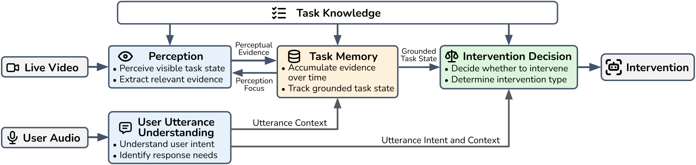

TL;DR FLUID annotates why, whether and when human instructors intervene during real task guidance and what they say, evaluates real-time systems against that evidence instead of a fixed reference, and builds an agent that decides whether, when and how to speak from the same evidence.
Real-time task guidance is inherently flexible: when an agent guides a user through a task, multiple responses and timings can be appropriate, and sometimes the best action is to remain silent. Existing benchmarks often miss this flexibility by treating synthesized dialogues as fixed targets for what to say and when to say it. We introduce FLUID (Flexible, Evidence-Grounded Situated Task Guidance), a unified framework for modeling, evaluating, and enabling flexible interaction in multimodal task guidance. Using naturally occurring human-human guidance from WTaG and HoloAssist, FLUID grounds interventions in their supporting evidence, necessity, and timing flexibility, and uses this representation both to evaluate flexible guidance and to build a real-time agent for task guidance. Our agent achieves the strongest overall balance of response correctness, intervention precision, timely guidance, and response latency among evaluated systems, while still leaving room for improvement in avoiding speech overlap. Together, FLUID moves situated task guidance beyond rigid reference matching toward more natural and adaptive human-AI interaction.
FLUID links each instructor intervention to the user actions or utterances that triggered it, whether the intervention was necessary, and when it would be useful. These annotations capture four layers of task guidance: user utterances, actions and states, evidence and intervention windows, and instructor responses. Explore real examples from WTaG through synchronized video and timelines to see how guidance is grounded in unfolding interactions.
Fixed-reference evaluation uses the same timing tolerance around each human instructor response, regardless of when evidence becomes available. FLUID instead evaluates interventions within evidence-derived windows, assigning a timing score based on when guidance is delivered.
Timely Correctness combines content correctness with the timing score. Necessary interventions are evaluated for timely responses, while optional interventions may be left unanswered without penalty.

FLUID-Agent is a real-time system for flexible, evidence-grounded task guidance: an asynchronous agentic architecture around one Qwen3.6-35B-A3B vision-language model, which serves perception, utterance understanding and intervention reasoning through task-specific prompting. Its components share a task memory of task-relevant evidence and interaction context, from which the agent decides whether, when and how to intervene, or to stay silent, as the interaction unfolds.
Evidence-grounded evaluation on the 43 WTaG and 72 HoloAssist test sessions; the small ± values are 95 % confidence half-widths. Bold marks the best per metric and dataset. Hover a metric’s name for its definition.
This work was supported in part by the Johns Hopkins Artificial Intelligence and Technology Collaboratory (JH AITC), funded by the National Institute on Aging of the National Institutes of Health under grant P30AG073104. The content is solely the responsibility of the authors and does not necessarily represent the official views of the National Institutes of Health.
@misc{zhao2026fluid,
title = {FLUID: Flexible, Evidence-Grounded Situated Task Guidance},
author = {Zhao, Yunqi and Peng, Run and Dong, Ze and Lu, Ryan and Dai, Yinpei and Chai, Joyce},
year = {2026},
note = {Preprint}
}